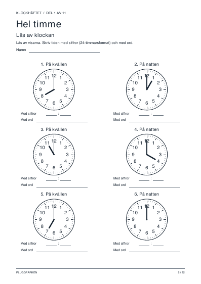
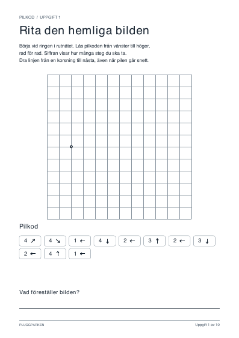
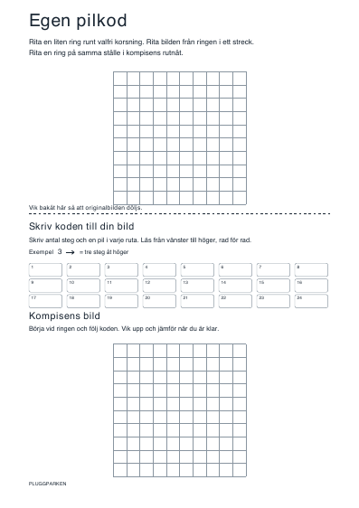
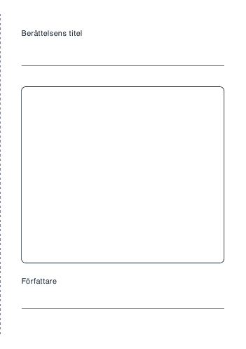

🖨️
Skriv ut
Arbetsblad att göra med papper och penna.
← Alla ämnen
Matematik
💯
Hundrarutan med hål
Ny hundraruta med slumpade hål varje gång. Välj svårighet och antal blad.
Facit sist, att vika fram och rätta själv.
Öppna bladgeneratorn
›

Klockhäftet
Rita visarna och skriv tiden med siffror och ord.
22 A4-sidor från hel timme till blandade tider.
Öppna PDF
›
Kodning

Hemliga bilder med pilkod
Följ pilarna i rutnätet och rita fram bilden.
10 arbetsblad i A4. Facit på sista sidan.
Öppna PDF
›

Egen pilkod
Rita en hemlig bild, skriv pilkoden och låt en kompis testa den.
Ett A4-blad med två rutnät och en viklinje.
Öppna PDF
›
Berättande

Min berättelsebok
Rita ett omslag och skriv en berättelse med början, mitten och slut.
Skriv ut dubbelsidigt på A4, vänd på kortsidan och vik på mitten.
Öppna PDF
›
Handstil
✏️
Övningsblad för handstil
Välj vad du vill öva på och skriv ut ditt eget A4-blad.
Öppna övningsblad
›